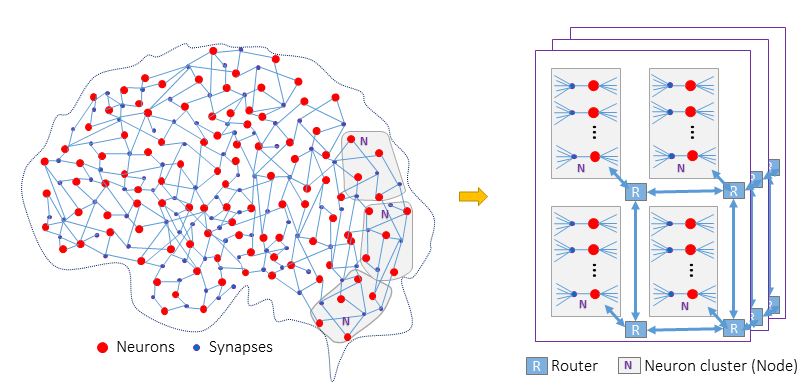
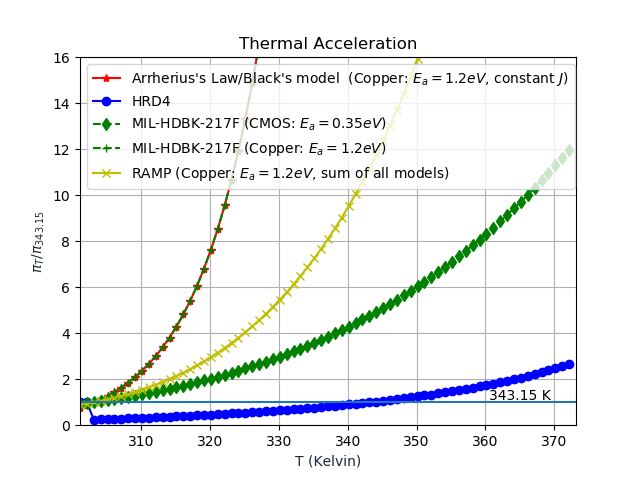
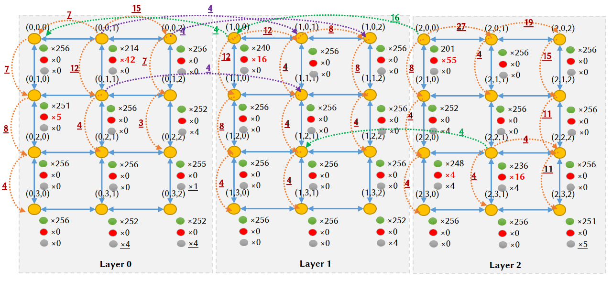
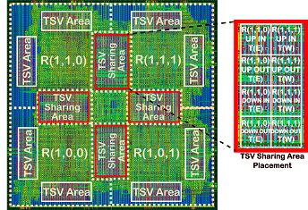
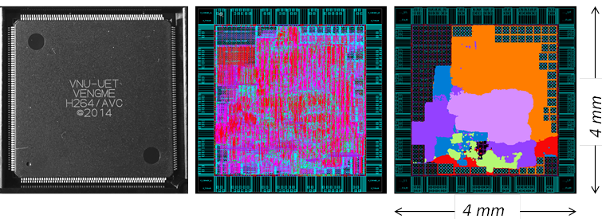

|  | We develop hardware for neuromorphic computing that mimics the behavior of biological brains. Here, the main target is to port the silicon brains into ASIC/FPGA and train them with bio-plausible learning approaches. |
We have developed a LIF neuron model with STDP learning. Neurons are clustered and placed in a node of a 3D-NoC system that supports both unicast and multicast communications. Furthermore, offline training has been investigating to deploy complex applications. We also plan to support the fault-tolerance feature for our 3D silicon brain. Selected publications:
Duy-Anh Nguyen, Xuan-Tu Tran, Khanh N. Dang, and Francesca Iacopi, ‘‘A lightweight Max-Pooling method and architecture for Deep Spiking Convolutional Neural Networks’’, 2020 IEEE Asia Pacific Conference on Circuits and Systems (APCCAS), Dec. 8-10, 2020
Mark Ogbodo, The Vu, Khanh N. Dang and Abderazek Abdallah, ‘‘Light-weight Spiking Neuron Processing Core for Large-scale 3D-NoC based Spiking Neural Network Processing Systems’’, 2020 IEEE International Conference on Big Data and Smart Computing (BigComp), Feb. 19-22, 2020
Khanh N. Dang and Abderazek Ben Abdallah “An Efficient Software-Hardware Design Framework for Spiking Neural Network Systems”, 2019 International Conference on Internet of Things, Embedded Systems and Communications (IINTEC) (accepted).
Funded by NAFOSTED under No. 102.01-2018.312 (2019-2011). I am the main PI of the project. We target to develop algorithms and architectures to solve the on-line defect on 3D-interconnect with awareness of thermal impact.
|  | Normalized thermal acceleration for lifetime reliability of TSV (Cooper) with academics (RAMP, Black, and Arrherius), industry (HDR4) and military (MIL-HDBK-217F) model. The fault rates are normalized to 343.15K (70C). |
Selected publications:
Khanh N. Dang, Akram Ben Ahmed, Abderazek Ben Abdallah, Xuan-Tu Tran, ‘‘A thermal-aware on-line fault tolerance method for TSV lifetime reliability in 3D-NoC systems’’, IEEE Access (in press)
Khanh N. Dang, Akram Ben Ahmed, Ben Abdallah Abderrazak and Xuan-Tu Tran, “TSV-OCT: A Scalable Online Multiple-TSV Defects Localization for Real-Time 3-D-IC Systems”, IEEE Transactions on Very Large Scale Integration Systems (TVLSI) (IF= 1.946), IEEE, Volume 28, Issue 3, pp 672 - 685, 2020. [DOI], [PDF]
Khanh N. Dang , Michael Meyer, Akram Ben Ahmed, Abderazek Ben Abdallah, and Xuan-Tu Tran, “A non-blocking non-degrading multi-defect link test method for 3D-Networks-on-Chip”, IEEE Access, (IF=4.098), 2020 (in press). [DOI], [PDF]. Patents:
A. Ben Abdallah, Khanh N. Dang, ‘‘Non-blocking Multiple-TSV Defects Localization for three Dimension Integrated Circuits (3D-ICs)’’, Japan patent, (under internal screening)
A. Ben Abdallah, Khanh N. Dang, Masayuki Hisada, ‘‘Distance-aware Extended Parity Product Coding for multiple faults detection for on-chip links’’, Japan patent, (under review)
|  | We target to develop a machine learning framework for fault recovery in parallel and distributed systems. A faulty computing element's task can be migrated to other nodes to allow fault-tolerance computing. We have developed both Max-Flow Min-cut adaptation and Genetic Algorithm for this flow. |
Selected publications:
Khanh N. Dang, Akram Ben Ahmed, Fakhrul Zaman Rokhani, Abderazek Ben Abdallah, and Xuan-Tu Tran, ‘‘A thermal distribution, lifetime reliability prediction and spare TSV insertion platform for stacking 3D NoCs’’, 2020 International Conference On Advanced Technologies For Communications (ATC) (accepted) Patents:
A. Ben Abdallah, Huakun Huang, Khanh N. Dang, Jiangning Song, ‘‘ＡＩプロセッサ (AI Processor)’’, 特願2020-194733, Japan patent, (under review)
I am a member of the project as a Ph.D. student at ASL from 2014 to 2017. We developed a comprehensive solution to tackle the reliability of on-chip interconnect. We have developed tolerance method for the permanent (hard), transient (soft), and TSV defect. Selected publications:
Khanh N. Dang, Akram Ben Ahmed, Yuichi Okuyama, Abderazek Ben Abdallah, “Scalable design methodology and online algorithm for TSV-cluster defects recovery in highly reliable 3D-NoC systems”, IEEE Transactions on Emerging Topics in Computing (TETC), IEEE, (in press). [link].
Khanh N. Dang, Akram Ben Ahmed, Xuan-Tu Tran, Yuichi Okuyama, Abderazek Ben Abdallah, “A Comprehensive Reliability Assessment of Fault-Resilient Network-on-Chip Using Analytical Model”, IEEE Transactions on Very Large Scale Integration Systems (TVLSI), IEEE, Volume 25, Issue 11, pp 3099-3112, 2017. [link].
Khanh N. Dang, Michael Meyer, Yuichi Okuyama, Abderazek Ben Abdallah, “A Low-overhead Soft-Hard Fault Tolerant Architecture, Design and Management Scheme for Reliable High-performance Many-core 3D-NoC Systems”, Journal of Supercomputing, Springer, Volume 73, Issue 6, pp 2705–2729, 2017. [link]. Patent
A. Ben Abdallah, Khanh N. Dang, Masayuki Hisada, “A TSV fault-tolerant router system for 3D-Networks-on-Chip”, 特願 2017-218953, Japan patent (under review).
|  | The layout of a layer 2x2 in OASIS project: NANDGATE 45nm, NCSU FreePDK TSV. The TSV size, pitch and Keep-out Zone are 4.06umx4:06um, 10um, and 15um, respectively. TSV area is shared between the neighboring routers for tolerating TSV defect. The project won Second Prize (the 2nd best) of Vietnamese Talents Award 2015. |
I am a core member of the project from 2011 to 2014. We developed a full hardware H.264/AVC encoder. My major task is to develop the inter-prediction module. Selected publications:
Ngoc-Mai Nguyen, Edith Beigne, Suzanne Lesecq, Duy-Hieu Bui, Nam-Khanh Dang, Xuan-Tu Tran, “H.264/AVC Hardware Encoders and Low-Power Features”, 2014 IEEE Asia Pacific Conference on Circuits & Systems (APCCAS 2014), Nov. 17-20, 2014.
Nam-Khanh Dang, Xuan-Tu Tran, Alain Merigot, “An Efficient Hardware Architecture for Inter-Prediction in H.264/AVC Encoders”,17th IEEE Symposium on Design and Diagnostics of Electronic Circuits and Systems (DDECS 2014), Apr. 23-25, 2014.
|  | The chip photograph: Global Foundry CMOS 130nm, 4mmx4mm, 100MHz, 1.2 V, 32mW, QFP256. The detail of the chip could be found here. |